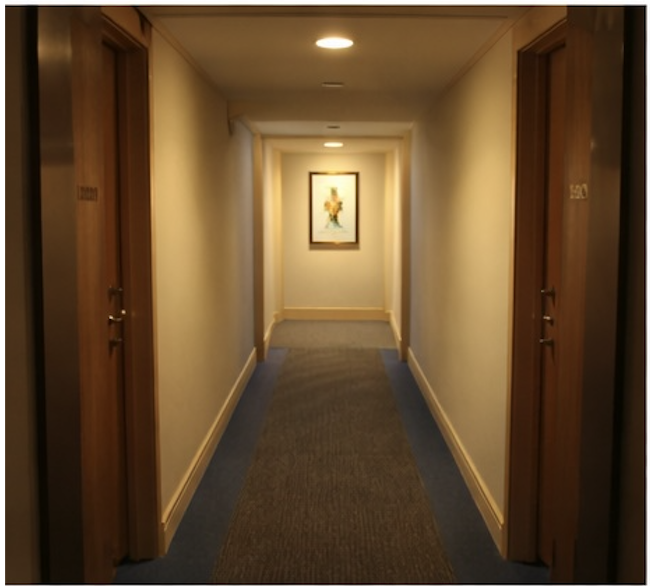
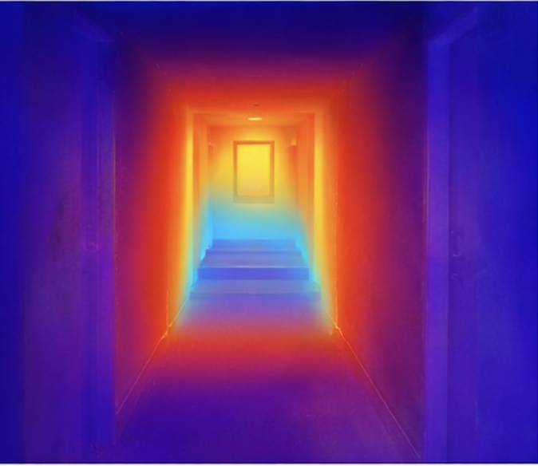

Architecture vs Resolution in
Monocular Depth Estimation:
A Speed–Accuracy Trade-off Study
Research Project Overview
This video presents a general overview of the DepthNav Research project, introducing the research aim, the experimental direction, and the broader motivation behind the work.
Navigate the Research Workflow
Follow the site from project overview to detailed methodology, validated results, research plans, and supporting materials.
Explore the Architecture Trade-Off
Interact with a simplified research demo to compare how different model architectures behave across representative scenes. Switch between sample inputs and view the contrast between transformer-based and CNN-based depth estimation outputs.
Scene Input

Model Output

Interpretation
In this example, the transformer-based model preserves stronger structural consistency, which supports safer interpretation of scene geometry, but this comes at the cost of lower inference speed.